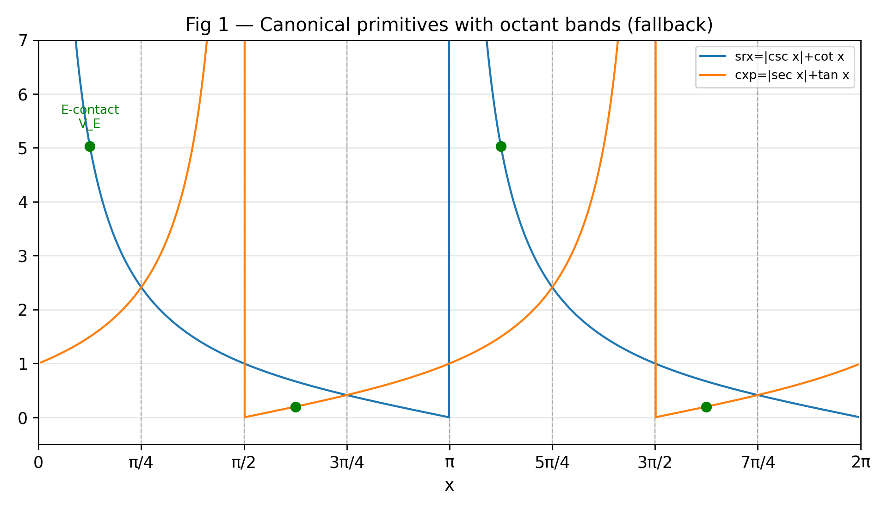
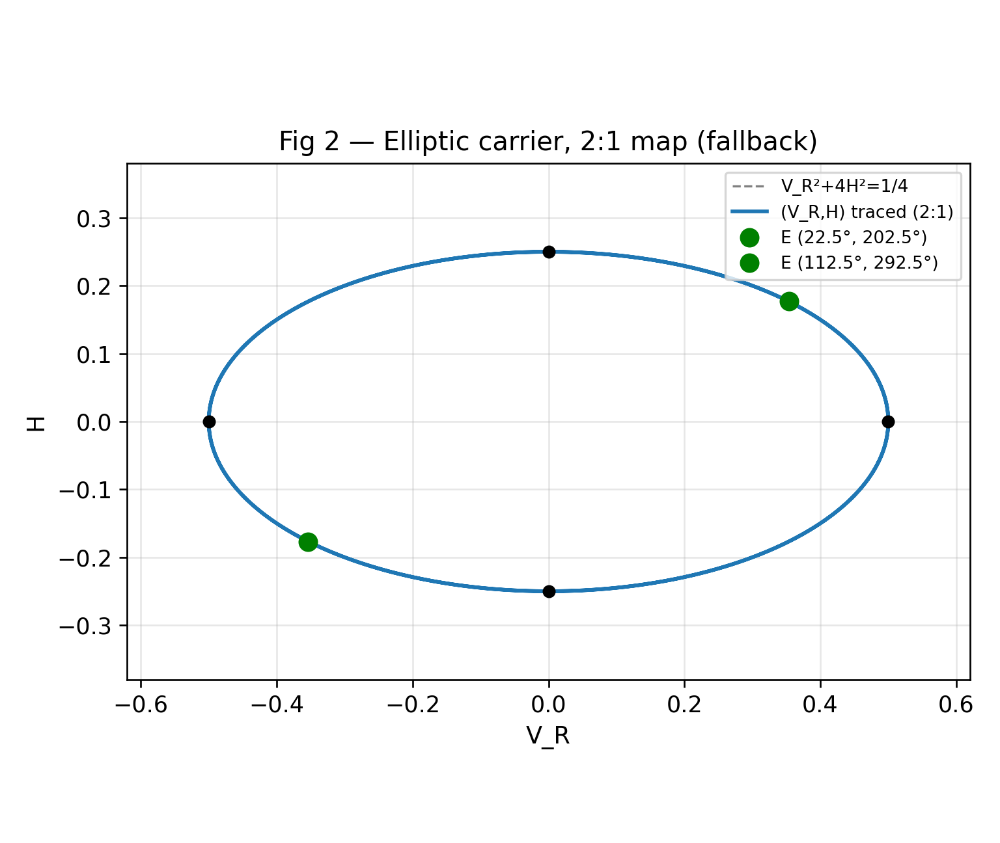
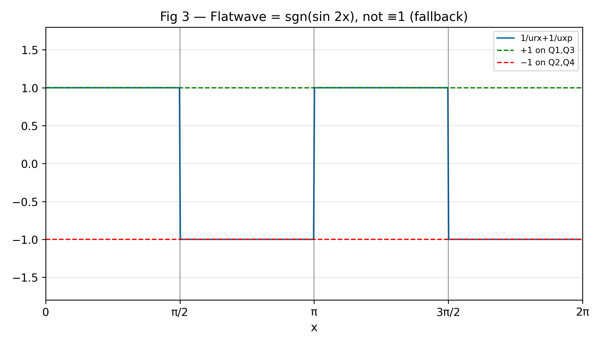
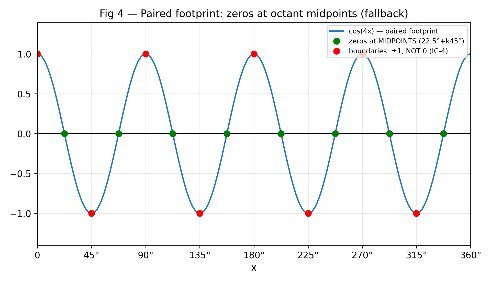
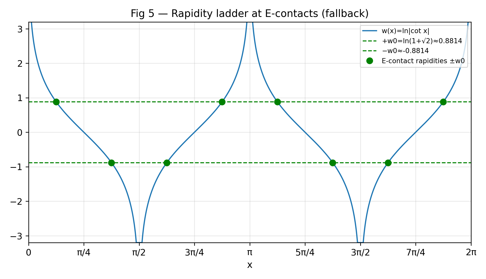

A restructured rewrite of Book 17 of R Theory — Volume IV (v1, the audit authority). Pictures and intuition first; the formal audit second. Every claim carries exactly one status: CP checked proof, SC completed symbolic check, NC completed numerical check, ST standard imported theorem, MA manuscript assertion, AX assumption or axiom, IN incomplete or failed computation, IC incorrect result. A sampled numerical agreement (~1e-10) is a completed numerical check, never a proof.
Reading this page. The manuscript's own words EXACT / CONDITIONAL / OPEN are its self-labels, never the audit's verdicts — they are quoted, not endorsed. Figures are live Desmos calculators; if Desmos cannot load, a static rendering appears instead. Live Desmos rendering was not browser-verified from the build machine — the static fallbacks carry the verified numbers, generated from the same expressions as the embeds (see validation/book17/). Volume IV audit authority is v1 only; v2, the v3 draft, and the unsigned certification report are context only and none of their claims are presented as established.
Contents. I. See it first · II. Then earn it · III. Incorrect, incomplete, and open · IV. Close the book
Source: Volume IV v1, doc 1-T5Eh7tbPcNenfB1ubkUmST5IYq_QGchm5X1ZcIRvoU. Chunk 1: §§17.1–17.5 (+ stub §17.1.4 Flatwave/carrier duality) — 116 assertions, 0 failed. Chunk 2: §§17.6–17.9 — 58 assertions, 0 failed. Chunk 3: §17.18 — 85 assertions, 0 failed. No timeouts in any chunk. The IC/IN findings below are conclusions drawn from passing assertions, not script failures.
Five figures, in source order. Each caption carries the status of what the figure shows.





Section-by-section audit of every numbered claim. Assertion counts: chunk 1 (audit_17_1.py) 116 passed; chunk 2 (audit_17_6.py) 58 passed; chunk 3 (audit_17_18.py) 85 passed — 259 total, 0 failed, no timeouts.
17.1.1 harmonic carrier. On every quadrant, srx − 1/srx = 2cos x/sin x, cxp − 1/cxp = 2sin x/cos x, hence urx + uxp = 2/(sin x cos x) = 4/sin(2x) and sin(2x)/4 = 1/(urx+uxp). CP (dense numeric tripwire: max relative error 3.3e-14 over 60,001 grid points NC). 17.1.2 imbalance. K₂ = 2cos(2x)/(sin x cos x), D₂ = 2/(sin x cos x), K₂/(2D₂) = cos(2x)/2. CP 17.1.3 elliptic carrier. V_R² + 4H² = 1/4 and the stub-proof route D₂² − K₂² = 16. CP 17.1.4 octant table. The dominant-ordering formulas per octant pair — e.g. octants 1–2: srx − cxp = (cos x − sin x)(1 + cos x + sin x)/(sin x cos x) — and all eight per-octant derivative signs are exact. CP Active pair. Via t = tan(x/2), on each open octant exactly the two named active primitives exceed 1 and the other two lie in (0,1); e.g. octant 1: srx − 1 = (1−t)/t > 0, cxp − 1 = 2t/(1−t) > 0 for t ∈ (0, √2−1). CP 17.1.5–6 three-bit code. The eight codes are distinct and cover ℤ₂³; each octant decodes from (half-quadrant, sgn cos 2x, sgn cos x). CP
V_R(x+π) = V_R(x), H(x+π) = H(x). The eight octant midpoints land on four ellipse points (±√2/4, ±√2/8), concyclic at distance √10/8; boundary points (±1/2, 0), (0, ±1/4) at x = 0°, 45°, 90°, 135°, 180°. CP The deck map x → x+π fixes ε = sgn(sin 2x) — the IC-1 exhibit. CP
w₀ = ln(1+√2): sinh w₀ = 1, cosh w₀ = √2 exactly; cot(22.5°) = 1+√2, cot(67.5°) = √2−1; E-contact rapidities ±w₀ in the +,−,−,+,+,−,−,+ pattern; E-contact and propagator cosh products (√2)⁴ = 4, all-eight product (√2)⁸ = 16; d/dx ln(cot x) = −1/(sin x cos x) = −2/sin(2x) per quadrant. CP V_E = √(4+2√2)+1+√2 ≈ 5.02734, V_E⁴ ≈ 638.7823; all four E-contact dominant values coincide. NC The printed §17.3.5 radical for crx(112.5°) evaluates ≈ 0.6682, not ≈ 5.027 — IC (IC-2); the correct value is 1/cxp(112.5°) = V_E.
The cyclic word is exactly (E,B,E,O)×2; E sits on the decay octants 1, 3, 5, 7, B on growth octants 2, 6 (ε = +1), O on growth octants 4, 8 (ε = −1). CP (The word's internal consistency is checked; whether the correspondence is a theorem is disputed inside the manuscript itself — see CONTR-1 on the Book 19 page.)
The section's gate admissions are consistent with the rest of the audit: the numerical value of S_F, the 1820 projector, and the downstream contraction inputs are all declared open, honestly. MA (the manuscript's own admissions, confirmed).
Algebra: 1/urx + 1/uxp = (srx+cxp)/(srx·cxp − 1) and Flatwave·H = 1/(urx·uxp) exactly. CP Wording: 1/(urx·uxp) is the reciprocal of the product, not of the geometric mean — IC (IC-3). Flatwave ≡ 1 exactly on Q1 and Q3 CP, not on Q2/Q4 — NC counterexamples; the exact Q2/Q4 value is −1 (Figure 3, SC).
17.6.1 five types. The E/B/O contact sets are each invariant under the 2:1 kernel x → x+π; the balanced footprint 1 is trivially invariant; the C8 shift by 4 octants is the kernel map. CP "Even under the code group" is unverifiable as stated — the code group is never defined as an x-map. MA 17.6.2 paired footprint. cos(4(x+π)) = cos(4x), minimal period π/2 (π/4 is not a period); zeros at all eight octant midpoints. CP The "vanishes at the octant boundaries" bullet is IC (IC-4). The charge-matching y₂ ∼ η₋₄·ζ_parent·n̂₅₄ substitution is the η₋₄ = η₀cos(4x) ansatz — a manuscript assertion. MA 17.6.3 E-localized. E contacts are exactly the decay-octant midpoints, strictly inside their octants. CP
17.7.1 what remains. S_F = ⟨Q_F, a·T + R_⊥⟩ = 3a given Q_F = (6/5)T, ‖T‖² = 5/2, ⟨T, R_⊥⟩ = 0; ⟨Q_F, R_⊥⟩ = 0 follows. CP 17.7.2 what is known. T = diag(1, 1, −1/4×8) (10×10 — the ‖T‖² = 5/2 forces eight −1/4 entries): traceless, ‖T‖² = 5/2, ‖Q_F‖² = 18/5, four-contact factor (1/4)⁴ = 1/256, propagator product (√2)⁴ = 4. CP srx(22.5°) = √(4+2√2)+1+√2 exactly SC; V_E⁴ = 638.7823 NC; the printed "638.7" is a truncation, not a rounding. NC 17.7.3 conversion chain. S_F = 3a, a = (6/5)c, c = 5S_F/18 close algebraically: the three n̂₅₄ forms coincide under substitution, and −(1/256)(√10/6) = −√10/1536 exactly. CP The physical content of the −(√10/1536) prefactor is a manuscript assertion. MA 17.7.4 bounds. (1/256)(18/5)(4) = 0.05625 = 9/160 exactly. CP The bound's form is heuristic — open. MA
The 8-row octant-to-ellipse table, the √10/8 concyclicity, and the boundary points all check against the proved carrier formulas. CP §17.9 is handoff prose with no new mathematical claims.
85 assertions, 0 failed — CP 83 · NC 2. Established: the formal projector algebra, the conversion chain, and the stripped-response definition S_F := ⟨Q_F, R̃⟩ (stripped of the −1 and 1/256). The Wolfram skeleton §17.18.8.2 does not execute its claims — four concrete defects (IC-8…IC-11, below). Three computations are incomplete with exact boundaries (IN-1…IN-3, below). The honest finding: the numerical value of S_F remains OPEN.
MA per the manuscript's own admissions, confirmed by the audit: S_F, N_{1820}, ζ_{parent}, η_{-4}, the c_{ord}/K_{parent} values, the P_{54} location (135 vs 1820 unreconciled), the N_{1820} 1/2 → 1/4 gap, P_{6435}, the explicit 1820 projector, the Frobenius norms, the role of 638.78, and the C3/C4 forcing question (the manuscript's own "immediate structural gate").
Established. The full octant/primitive/carrier/rapidity/C8 spine of §§17.1–17.4 checks out: harmonic carrier, imbalance, elliptic carrier, octant ordering, active pairs, 3-bit code, the 2:1 map, the rapidity ladder with w₀ = ln(1+√2), the C8 word, the five footprints' x → x+π evenness, the T-matrix arithmetic (‖T‖² = 5/2, ‖Q_F‖² = 18/5), the conversion chain's algebraic closure, and the 0.05625 bound arithmetic. Not established: the numerical value of S_F — the skeleton that would compute it has four concrete defects and three blocked inputs. That is the honest finding of this book, and it is also what the manuscript itself says in §17.5. The remaining Volume IV findings (Books 18–19, appendices, the four-version record, and the full IC-1…IC-18 list) are on the Book 18, Book 19, and Volume IV overview pages.
Rewrite status: every checkable claim above was re-verified — 89 real assertions in validation/book17/verify_book17.py (CP 54, SC 19, NC 16), all passing, no timeouts; worst measured residual 6.1e-10 on the finite-difference dw/dx tripwire (V18 — the identity itself is established exactly by the accompanying symbolic check). Figure PNGs are generated by validation/book17/gen_graphs.py from the same expressions as the Desmos embeds. Embed consistency (Desmos id ↔ fallback PNG ↔ LaTeX ↔ caption) is checked by validation/book17/test_embeds.py. Pictures illustrate proved statements; they are not the proofs. The audit-chunk figures (259 assertions, 0 failed) are the independent audit's; the V-checks above are this page's own re-verification.